Home
Futebol
Elenco
Títulos
História
Arena MRV
Campeão do Gelo 1950
07/12/1950
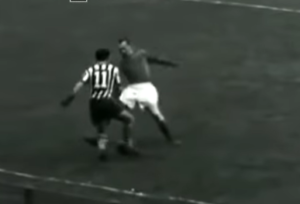
Stade Français-FRA 1 x 2 Atlético
- Paris (França)
05/12/1950
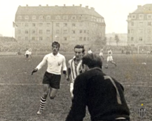
Seleção de Luxemburgo 3 x 3 Atlético
- Luxemburgo (Luxemburgo)
26/11/1950
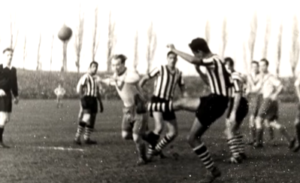
Eintracht Braunschweig-ALE 3 x 3 Atlético
- Braunschweig (Alemanha)
22/11/1950
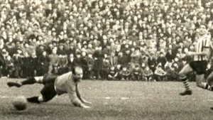
Anderlecht-BEL 1 x 2 Atlético
- Bruxelas (Bélgica)
20/11/1950
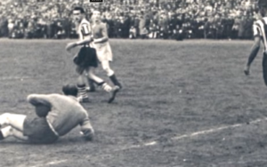
Saarbrücken-ALE 0 x 2 Atlético
- Saarbrücken
16/11/1950
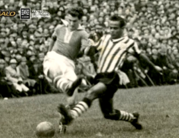
Rapid Viena-AUT 3 x 0 Atlético
- Viena (Áustria)
12/11/1950
Schalke 04-ALE 1 x 3 Atlético
- Gelsenkirchen (Alemanha)
05/11/1950
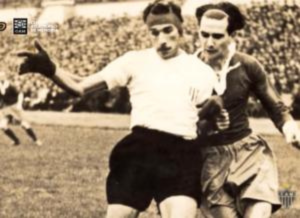
Werder Bremen-ALE 3 x 1 Atlético
- Bremen (Alemanha)
04/11/1950
Hamburgo-ALE 0 x 4 Atlético
- Hamburgo (Alemanha)
01/11/1950
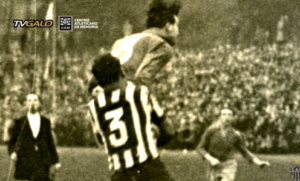
Munich 1860-ALE 3 x 4 Atlético
- Munique (Alemanha)
Campeão do Gelo 1950
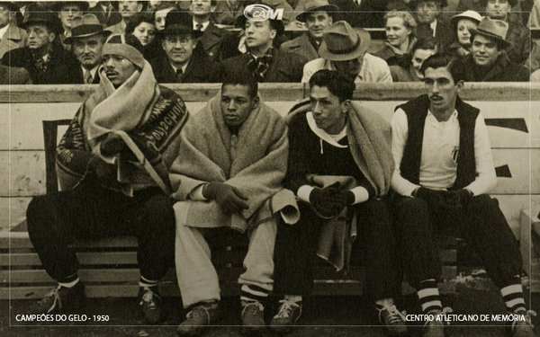
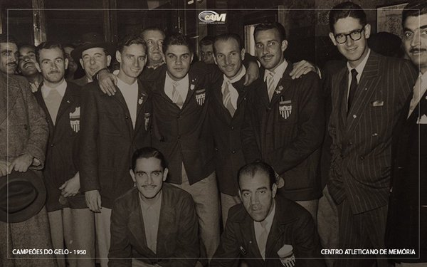
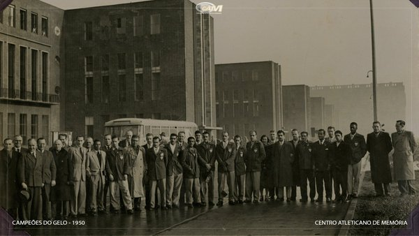
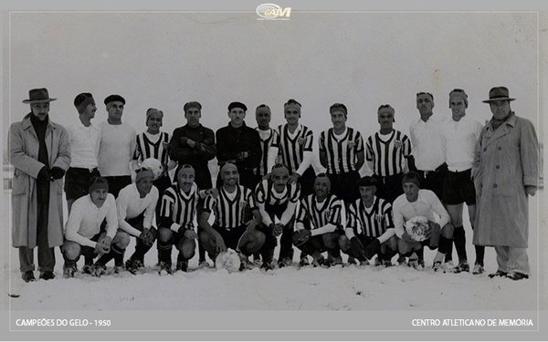